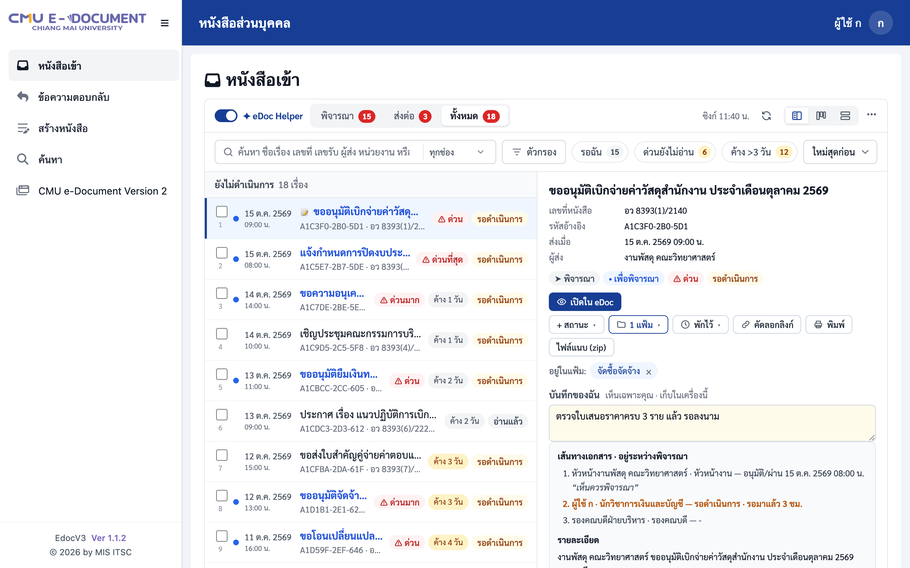

ใช้ eDoc ได้เร็วขึ้น
เป็นระเบียบขึ้น
eDoc Helper เป็นผู้ช่วยบนหน้า eDoc เดิมของคุณ — หนังสือเข้าแสดงทันที ค้นหาได้ทุกเรื่อง จัดสถานะและแฟ้มของคุณเอง โดยอ่านอย่างเดียว และเก็บข้อมูลไว้ในเครื่องของคุณ
ใช้ได้กับ Google Chrome และ Microsoft Edge · อัปเดตให้อัตโนมัติ
เร็ว
หนังสือเข้าแสดงจากข้อมูลในเครื่องภายในเสี้ยววินาที ไม่ต้องรอ eDoc โหลดทั้งหน้า และค้นหาได้จากทุกหน้าด้วย Ctrl K
เป็นระเบียบ
ตั้งสถานะ ใส่แฟ้ม จดบันทึก และพักเรื่องไว้ก่อน ดูเป็นรายการ บอร์ด หรือการ์ด — ของคุณเอง ไม่กระทบคนอื่น
ปลอดภัยและเป็นส่วนตัว
อ่านอย่างเดียว ไม่แก้ไข ไม่ส่ง ไม่กดอะไรใน eDoc แทนคุณ ไม่มีเซิร์ฟเวอร์ของส่วนขยาย ข้อมูลอยู่ในเบราว์เซอร์ของคุณ
ทำงานกับ eDoc ให้จบเร็วขึ้น
ทุกอย่างอยู่บนหน้า eDoc เดิม เปิด–ปิดได้ด้วยสวิตช์เดียว
เห็นทุกเรื่องทันที แยกตามสิ่งที่ต้องทำ
แท็บ พิจารณา · ส่งต่อ · ทั้งหมด บอกจำนวนเรื่องที่ค้าง ป้ายสีบอกความด่วนและจำนวนวันที่รอ คลิกเรื่องเพื่อดูรายละเอียดและเส้นทางเอกสารทางขวา
- ดูรายละเอียดโดยไม่ทำให้ eDoc บันทึกว่าอ่านแล้ว
- แสดงทันทีจากข้อมูลในเครื่อง แล้วอัปเดตจาก eDoc ให้เอง
- “เปิดใน eDoc” ไปยังหน้าที่ดำเนินการได้จริง

หาเรื่องเจอในไม่กี่ตัวอักษร
พิมพ์ชื่อเรื่อง เลขที่หนังสือ ผู้ส่ง หรือวางรหัสอ้างอิง — หรือกด Ctrl K จากหน้าไหนก็ได้ใน eDoc เพื่อค้นหาเรื่องและคำสั่ง
- รหัสพิมพ์ผิด (O แทน 0, เลขไทย) แก้ให้เอง
- Enter เปิดเรื่องใน eDoc · Shift+Enter ดูในรายการ
กรองแบบที่คุณใช้จริง แล้วปักไว้
กรองตามการดำเนินการ การอ่าน สถานะของคุณ แฟ้ม วันที่ส่ง ความเร็ว และวัตถุประสงค์ — กด 📌 เพื่อปักตัวกรองที่ใช้บ่อยไว้เหนือรายการ
- มุมมองรายการ บอร์ด หรือแบบละเอียด จำไว้ให้ทุกครั้ง
- ปุ่มด่วน: รอฉัน · ด่วนยังไม่อ่าน · ค้างเกิน 3 วัน
สถานะ แฟ้ม บันทึก และพักไว้
ติดสถานะที่ตั้งเอง (เช่น รอเอกสารเพิ่ม) ลากเรื่องใส่แฟ้ม จดบันทึกที่เห็นเฉพาะคุณ และพักเรื่องที่ยังทำไม่ได้ไว้จนถึงวันที่ต้องการ
- มุมมองบอร์ดแยกคอลัมน์ตามสถานะ ลากย้ายได้
- สำรองและนำเข้าไปเครื่องอื่นได้
พิมพ์และไฟล์แนบ (zip)
พิมพ์รายละเอียดและเส้นทางเอกสาร หรือดาวน์โหลดไฟล์แนบทุกไฟล์เป็น zip ในครั้งเดียว
แจ้งเตือนหนังสือใหม่
เลือกได้: ปิด เฉพาะเรื่องด่วน หรือทุกเรื่อง — บอกแค่จำนวน ไม่แสดงชื่อเรื่อง
กล่องอื่นของคุณ
เห็นว่ามีเรื่องรอในกล่องหน่วยงานที่คุณมีบทบาทกี่เรื่อง โดยไม่ต้องสลับไปดูทีละกล่อง
ข้อความตอบกลับ
รายการข้อความตอบกลับแสดงทันทีเหมือนหนังสือเข้า ค้นหาและจัดสถานะได้
เรื่องที่เปิดไม่ได้
รวมเรื่องที่ eDoc ไม่ยอมให้อ่านไว้ที่เดียว คัดลอกรายการแจ้งปัญหา (มีแต่รหัส) ได้ทันที
รวม eDoc v2
เลือกแสดงหนังสือจากระบบเดิมไว้ในรายการเดียวกัน มีป้าย v2 กำกับ
เริ่มใช้ได้ใน 1 นาที
ไม่ต้องสมัคร ไม่ต้องตั้งค่าเซิร์ฟเวอร์ ใช้การเข้าสู่ระบบ eDoc เดิมของคุณ
ติดตั้ง
กด เพิ่มลงใน Chrome จาก Chrome Web Store (Edge: อนุญาตส่วนขยายจากร้านค้าอื่นก่อนหนึ่งครั้ง)
เข้า eDoc ตามปกติ
เปิด edoc.cmu.ac.th และเข้าสู่ระบบ — ตัวช่วยแสดงบนหน้าหนังสือเข้าเอง
ตั้งค่าเริ่มต้น
เลือกมุมมองและการแจ้งเตือนใน 4 ขั้นสั้น ๆ แล้วดูทัวร์ 1 นาทีบนหน้าจริงของคุณ
ออกแบบให้ไว้ใจได้
ใช้กับเอกสารราชการ จึงตั้งใจให้ทำเท่าที่จำเป็น — อ่านนโยบายความเป็นส่วนตัว
อ่านอย่างเดียว
ใช้คำสั่งอ่านของ eDoc ที่กำหนดไว้ 10 ชุด ไม่มีคำสั่งเขียน ไม่ส่ง ไม่อนุมัติ ไม่กดปุ่มใด ๆ แทนคุณ
ข้อมูลอยู่ในเครื่องคุณ
ไม่มีเซิร์ฟเวอร์ของส่วนขยาย ไม่มีการติดตามการใช้งาน ข้อมูลไม่ถูกส่งไปที่ใดนอกจาก eDoc เอง
การเข้าสู่ระบบไม่ถูกเก็บ
ใช้การเข้าสู่ระบบของหน้า eDoc เองระหว่างใช้งาน เก็บในหน่วยความจำเท่านั้น ไม่บันทึกลงเครื่อง
แยกตามผู้ใช้
ใช้เครื่องร่วมกันได้ แต่ละคนเห็นเฉพาะข้อมูลของตัวเอง และลบข้อมูลของตัวเองได้จากหน้าตั้งค่า
คำถามพบบ่อย
เป็นของมหาวิทยาลัยหรือไม่
ไม่ใช่ผลิตภัณฑ์ทางการของมหาวิทยาลัยเชียงใหม่ / ITSC เป็นเครื่องมือช่วยใช้งานที่ทำงานบนหน้า eDoc ของคุณเท่านั้น
ผู้ส่งจะเห็นว่าฉันอ่านแล้วหรือไม่
การดูรายละเอียด ดูย่อ ค้นหา พิมพ์ และเปิดไฟล์จากตัวช่วยไม่ทำให้ eDoc บันทึกว่าอ่านแล้ว จะบันทึกเมื่อคุณกด “เปิดใน eDoc” เหมือนเปิดจาก eDoc ตามปกติ
ใช้กับ Microsoft Edge ได้ไหม
ได้ ติดตั้งจาก Chrome Web Store โดยกด “อนุญาตส่วนขยายจากร้านค้าอื่น” ใน Edge หนึ่งครั้ง
ถ้า eDoc ช้าหรือปิดปรับปรุง ใช้ได้ไหม
รายการจากข้อมูลในเครื่องยังเปิดดูและค้นหาได้ ตัวช่วยจะบอกว่าข้อมูลอัปเดตล่าสุดเมื่อไร และลองใหม่เองเมื่อ eDoc กลับมา
ปิดตัวช่วยชั่วคราวได้ไหม
ได้ กดสวิตช์ eDoc Helper มุมบนซ้ายของกล่อง หน้าจะกลับเป็น eDoc เดิมทันที กดอีกครั้งเพื่อเปิด
ข้อมูลของฉันหายได้ไหม
ข้อมูลอยู่ในเบราว์เซอร์ หากลบส่วนขยายหรือล้างข้อมูลเบราว์เซอร์จะหายไป แนะนำส่งออกสำรองไว้เป็นครั้งคราว (แผงด้านข้าง → ตั้งค่า → สำรองแฟ้ม สถานะ และบันทึก)
ลองใช้กับกล่องหนังสือของคุณวันนี้
ฟรี ใช้การเข้าสู่ระบบ eDoc เดิม ปิดได้ทุกเมื่อ
เพิ่มลงใน Chrome — ฟรี